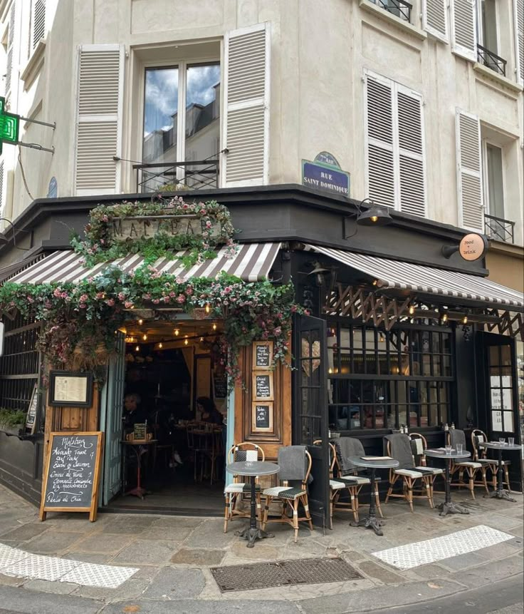

Läs noggran
Observationer vid kustområdet
Under de senaste veckorna har några boende noterat återkommande rörelser i området vid vattnet. Det handlar främst om personer som passerar igenom utan tydligt ärende.
Vissa tider verkar vara mer frekventa än andra, särskilt kvällstid.
En anteckning som cirkulerar i ett vittnesmål innehåller siffran 55.610.
Vad siffran syftar på är oklart.
Lokalt café lockar besökare
Ett nytt café i området har snabbt blivit ett vanligt stopp för förbipasserande. Många sitter där korta stunder innan de går vidare.

Någon har noterat en sifferrad i närheten: 12.972.
Det är oklart om det är en slump eller något som har betydelse.
Platsen används ofta för korta möten.
Person observerad vid elinstallationer
En person har setts vid flera tillfällen i närheten av teknisk utrustning i området.
Personen uppehåller sig ofta nära ett svartmålat elskåp.
Efter korta interaktioner lämnas platsen snabbt.
Inga ytterligare incidenter har rapporterats.
Förändringar i kustnära område
Lokala observationer över tid
Området har under en längre period haft små förändringar i rörelsemönster.
Flera personer rör sig genom samma platser med jämna mellanrum.
En sammanställning av noteringar visar två värden: 55.610201 och 12.972288.
Det är oklart om de två värdena har ett samband.
Vissa observationer pekar mot områden nära sittplatser och öppna ytor.
Stenytor och återkommande mötesplatser
I området finns flera stenytor där människor ofta stannar till en kort stund.
En av dessa ytor beskrivs som ovanligt jämn jämfört med andra i närheten.
Det finns inga rapporterade problem kopplade till platsen.
Observationerna fortsätter att dokumenteras löpande.
Återkommande noteringar i området
Kommunala inspektörer har börjat samla in fler rapporter från samma geografiska område.

Det handlar främst om återkommande detaljer som inte verkar ha någon direkt förklaring.
Flera anteckningar pekar mot att rörelsemönster följer en slags rutin.
En plats nämns upprepade gånger men utan exakt angivelse av position.